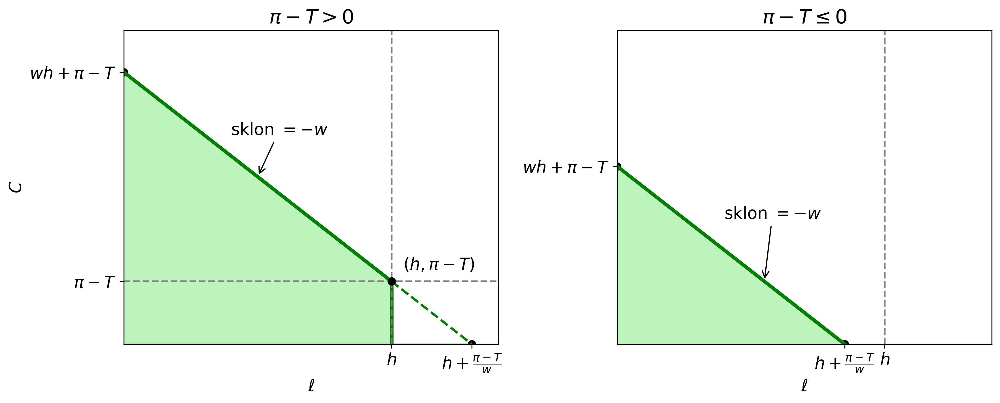
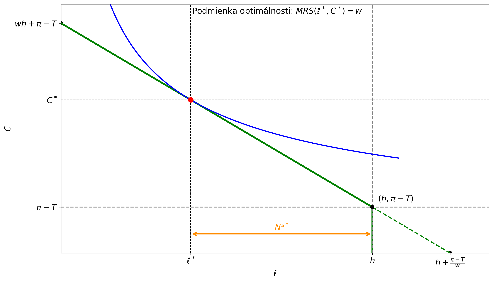
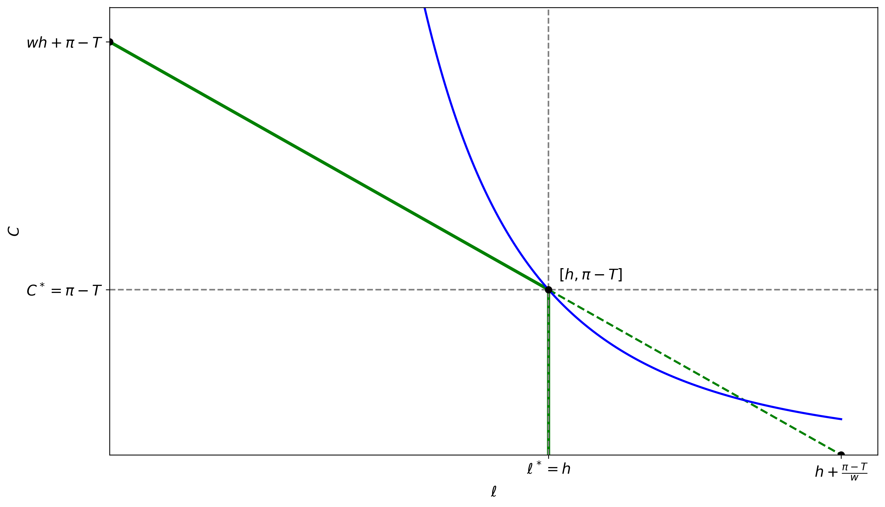
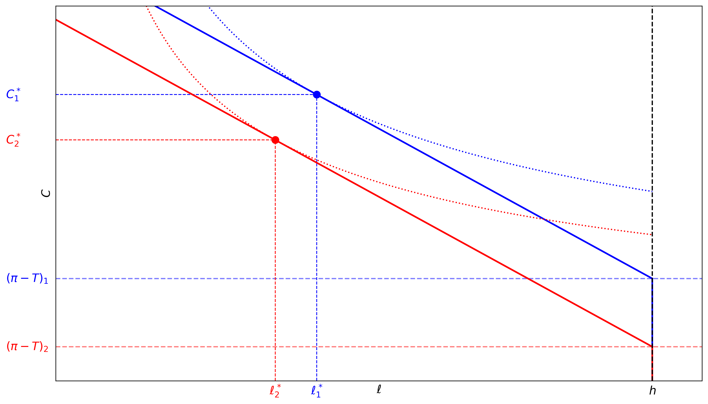
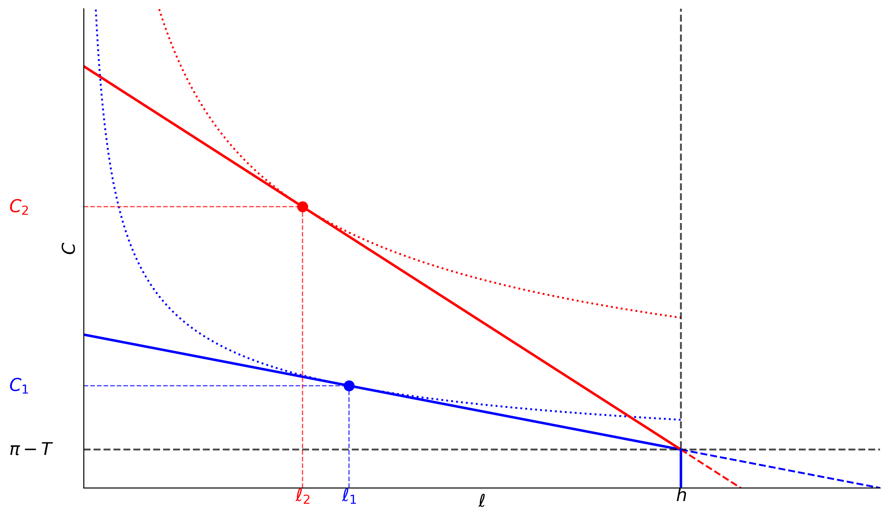
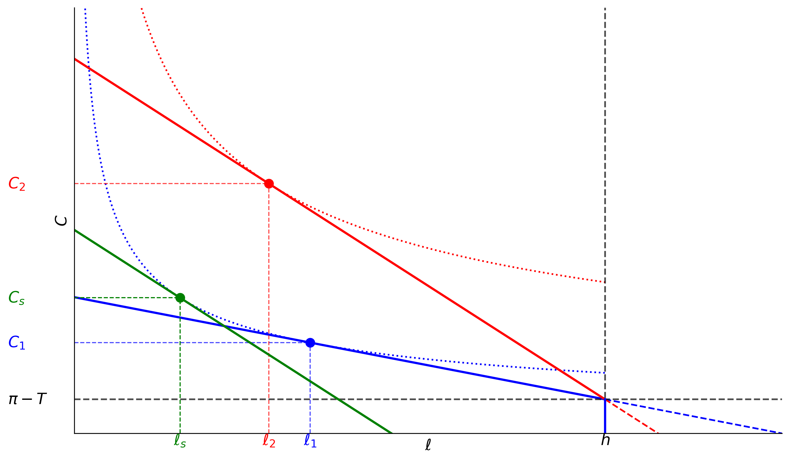
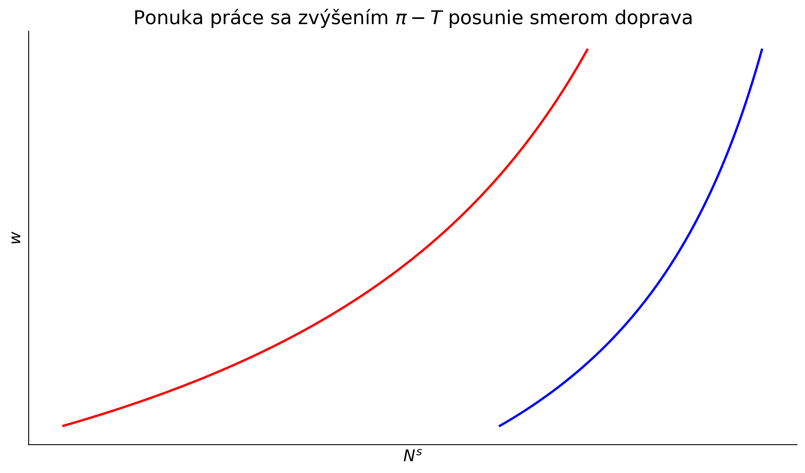

7. Voľný čas a spotreba#
V predchádzajúcej kapitole sme analyzovali spotrebiteľovo rozhodovanie medzi rôznymi spotrebnými statkami. V makroekonómii sa pozornosť často sústreďuje na rozhodovanie medzi spotrebou produktov a spotrebou voľného času.
Budeme uvažovať agregovaný, reálny a statický model spotrebiteľa.
Agregované hľadisko znamená, že všetky spotrebné statky nahradíme jediným kompozitným statkom \(C\), ktorý predstavuje celkovú spotrebu tovarov a služieb.
Kompozitný statok \(C\) plní v modeli aj úlohu peňazí (média výmeny). Príjmy, výdavky a ostatné transakcie spotrebiteľa preto vyjadrujeme v jednotkách spotreby, nie v peňažných jednotkách. Ak je premenná vyjadrená v jednotkách spotreby, ide o jej reálnu hodnotu, ktorá nie je ovplyvnená trhovou cenou spotreby.
Ak by sme pracovali s nominálnymi premennými, hodnotu spotreby by sme zapisovali ako \(PC\),
kde \(P\) označuje cenu jednotky spotreby.
V tejto kapitole budeme používať reálne premenné, a preto cenu jednotky spotreby považujeme za rovnú jednej,
Statické hľadisko znamená, že spotrebiteľa analyzujeme, akoby žil iba v jednom období. Neuvažujeme preto sporenie, zadlžovanie ani presuny spotreby medzi rôznymi obdobiami. Dynamické hľadisko správania spotrebiteľa predstavíme v nasledovnej kapitole.
Spotrebiteľ rozdeľuje svoj exogénny disponibilný čas \(h\) medzi prácu \(N^s\) a voľný čas \(\ell\)
Voľný čas a spotreba sú v modeli interpretované ako spotrebné statky.
7.1. Preferencie spotrebiteľa#
Predpokladáme, že voľný čas je pre spotrebiteľa statok ako spotreba a preferencie voči týmto statkom vyjadríme dvakrát diferencovateľnou funkciou užitočnosti
Predpokladáme, že preferencie spotrebiteľa majú rovnaké vlastnosti ako v predchádzajúcej kapitole. Funkcia užitočnosti je rastúca vo svojich argumentoch a reprezentuje spojité a konvexné preferencie v rozhodovacom priestore \((\ell,C)\). Indiferenčné krivky sú preto klesajúce a konvexné.
Predpokladáme, že voľný čas aj spotreba sú normálne (Tab. 6.1) a štandardné (Tab. 6.2) statky.
Hraničná miera spotrebiteľskej substitúcie medzi voľným časom a spotrebou je
Hraničná miera spotrebiteľskej substitúcie udáva približné množstvo spotreby, ktorého je spotrebiteľ ochotný vzdať sa za dodatočnú jednotku voľného času pri nezmenenej úrovni užitočnosti.
7.2. Rozpočtové ohraničenie#
Spotrebiteľ získa príjem z ponuky práce a z vlastníctva výrobných faktorov.
Ak spotrebiteľ pracuje \(N^s\) jednotiek času za reálnu mzdovú sazdbu \(w\), dosahuje pracovný príjem \(wN^s\).
Okrem pracovného príjmu môže spotrebiteľ získať aj zisk firmy, ktorú vlastní. Tento príjem označíme \(\pi\).
Ak spotrebiteľ platí paušálnu daň \(T\), jeho rozpočtové ohraničenie je
Skrátené pojmy
Na mzdovú sadzbu \(w\) sa v texte budeme skrátene odvolávať aj ako na mzdu. Mzdová sadzba a mzda sú v ďalšom texte synonyma.
Príjem \(\pi-T\) je nepracovný príjem po zaplatení paušálnej dane alebo skrátene iba nepracovný príjem.
- Paušálna daň
je daň, ktorej výška nezávisí od rozhodnutí spotrebiteľa. Spotrebiteľ ju platí bez ohľadu na výšku svojej spotreby, množstvo odpracovaného času alebo dosiahnutý príjem.
Spotreba nemôže byť vyššia ako disponibilný príjem spotrebiteľa. Disponibilný príjem pozostáva z pracovného príjmu, zisku firmy a je znížený o zaplatené dane.
Po dosadení časového ohraničenia (7.1)
dostaneme rozpočtové ohraničenie v tvare
Dodatočná jednotka voľného času znižuje pracovný príjem o \(w\) jednotiek spotreby. Reálna mzdová sadzba preto predstavuje alternatívne náklady voľného času.
7.3. Hranica spotrebiteľských možností#
Rozpočtové ohraničenie (7.4) vymedzuje množinu spotrebiteľských možností, teda všetky kombinácie voľného času a spotreby, ktoré si môže spotrebiteľ dovoliť.
Ak v rozpočtovom ohraničení nahradíme znak nerovnosti znakom rovnosti, získame hranicu spotrebiteľských možností
Hranica spotrebiteľských možností oddeľuje dosiahnuteľné kombinácie voľného času a spotreby od nedosiahnuteľných kombinácií.
Hraničná miera rozpočtovej substitúcie medzi voľným časom a spotrebou je
Hraničná miera rozpočtovej substitúcie udáva množstvo spotreby, ktoré musí spotrebiteľ obetovať za dodatočnú jednotku voľného času. Je určená sklonom rozpočtového ohraničenia
a jej hodnota sa rovná reálnej mzdovej sadzbe.
Všimnite si
Doteraz sme rozpočtové ohraničenie zapisovali v reálnych jednotkách spotreby. V nominálnych jednotkách by po dosadení časového ohraničenia malo rozpočtové ohraničenie tvar
kde \(P\) je cena jednotky spotreby, \(\omega = wP\) nominálna mzdová sadzba, \(\Pi = P \pi\) nominálny dôchodok z vlastníctva výrobných faktorov a \(\mathcal{T} = PT\) nominálna paušálna daň.
Tento zápis je analógiou rozpočtového ohraničenia spotrebiteľa
pričom
Cena voľného času je preto nominálna mzdová sadzba \(\omega\). Ak sa spotrebiteľ rozhodne spotrebovať o jednotku voľného času viac, vzdáva sa pracovného príjmu vo výške \(\omega\).
Hraničná miera rozpočtovej substitúcie medzi voľným časom a spotrebou je
kde \(w\) označuje reálnu mzovú sadzbu.

Obr. 7.1 Rozpočet spotrebiteľa v rozhodovacom priestore voľný čas – spotreba.#
Obrázok zobrazuje hranice spotrebiteľských možností pre dva prípady. V oboch prípadoch je sklon hranice rovný \(-w\), pričom reálna mzdová sadzba \(w\) predstavuje alternatívne náklady voľného času.
Ak platí \(\pi-T>0\), spotrebiteľ disponuje kladným nepracovným príjmom. Aj bez ponuky práce preto môže financovať spotrebu vo výške \(\pi-T\). Hranica spotrebiteľských možností pretína obe osi a spotrebiteľské možnosti sú ohraničené rozpočtovým aj časovým ohraničením. Hranica spotrebiteľských možností má v tomto prípade konkávny tvar.
Ak platí \(\pi-T\le 0\), spotrebiteľ nedokáže financovať spotrebu iba z nepracovného príjmu. Na dosiahnutie kladnej spotreby musí ponúkať prácu. Hranica spotrebiteľských možností preto pretína os voľného času v bode \(h+(\pi-T)/w\), ktorý leží naľavo od bodu \(h\).
Ďalšie grafické interpretácie v tejto kapitole budú predpokladať \(\pi - T > 0\).
7.4. Úloha spotrebiteľa#
Úloha spotrebiteľova je maximalizácia funckie užitočnosti (7.2) vzhľadom na rozpočtové ohraničenie (7.5), časové ohraničenie (7.1) a nezápornosť rozhodovacích premenných. Formálne ide o úlohu
vzhľadom na (7.5)
a
7.5. Podmienky prvého rádu#
Podmienky prvého rádu sú
hraničná miera spotrebiteľskej substitúcie (7.3) a hraničná miera rozpočtovej substitúcie medzi voľným časom a spotrebou (7.7) sa rovnajú a
výber voľného času a spotreby sa realizuje na hranici spotrebiteľských možností.
a (7.6):
Po dosadení vzťahov (7.3) a (7.7) do (7.10) dostaneme
Spotrebiteľ v optime oceňuje dodatočnú jednotku voľného času rovnako, ako sú jej alternatívne náklady vyjadrené reálnou mzdovou sadzbou.
Redukovaný tvar modelu úlohy (7.8), (7.5) a (7.9) možno zapísať funkciami
a
Kombináciou (7.12) a (7.1) získame ponuku práce v redukovanom tvare:
Redukovaný tvar za predpkladu Cobbovho Douglasovho tvaru funkcie užitočnosti je odvodený v príklade Príklad: Ponuka práce pri Cobbovej-Douglasovej funkcii užitočnosti: (7.18), (7.19) a (7.20).

Obr. 7.2 Grafická interpretácia spotrebiteľského rozhodovania medzi voľným časom a spotrebou#
Grafická interpretácia riešenia úlohy (7.8), (7.5) a (7.9) je na Obr. 7.2 Zelená čiara predstavuje hranicu spotrebiteľských možností a modrá krivka indiferenčnú krivku prechádzajúcu optimálnym bodom.
Optimálna kombinácia voľného času a spotreby \((\ell^*,C^*)\) je bodom dotyku indiferenčnej krivky a hranice spotrebiteľských možností. V tomto bode sa hraničná miera spotrebiteľskej substitúcie medzi voľným časom a spotrebou rovná hraničnej miere rozpočtovej substitúcie.
Tretia endogénna premenná modelu je ponuka práce, ktorú možno dopočítať z časového ohraničenia (7.1). Optimálna ponuka práce zodpovedá časti disponibilného času, ktorú spotrebiteľ nevenuje voľnému času,
Graficky je optimálna ponuka práce vyznačená ako vzdialenosť medzi optimálnym voľným časom \(\ell^*\) a celkovým disponibilným časom \(h\).
Ak optimálne riešenie neleží v extrémnych bodoch \(\ell=0\) alebo \(\ell=h\), konvexnosť preferencií a tvar hranice spotrebiteľských možností zabezpečujú, že podmienky prvého rádu (7.11) a (7.6) sú postačujúce pre existenciu optima.
Na Obr. 7.3 je zobrazené rozhodnutie spotrebiteľa v bode \([\ell^*,C^*] = [h,\pi-T]\). Spotrebiteľove rozhodnutie je nepracovať (\(N^{s*}=0\)) a spotrebu financovať výlučne z nepracovného príjmu. V tomto bode je hraničná miera spotrebiteľskej substitúcie vyššia než reálna mzdová sadzba,
Rozhodnutie spotrebiteľa nepracovať je priblížené v príklade Príklad: Ponuka práce pri Cobbovej-Douglasovej funkcii užitočnosti. Príklad predpkkladá Cobbov-Douglasov tvar funkcie užitočnosti.

Obr. 7.3 Spotrebiteľské rozhodnutie nepracovať#
Správanie spotrebiteľa priblížime komparatívnou statikou (Komparatívna statika).
7.6. Vplyv zníženia zisku alebo zvýšenia paušálnej dane#
Obr. 7.4 znázorňuje vplyv poklesu nepracovného príjmu \((\pi-T)\), ktorý môže byť spôsobený napríklad poklesom zisku firmy \(\pi\) alebo zvýšením paušálnej dane \(T\).
Pokles nepracovného príjmu má čisto príjmový efekt. Posúva hranicu spotrebiteľských možností smerom nadol. Keďže voľný čas aj spotreba sú normálne statky, spotrebiteľ v dôsledku príjmového efektu obmedzuje spotrebu aj voľný čas. Optimálny voľný čas sa znižuje z \(\ell_1^*\) na \(\ell_2^*\) a optimálna spotreba z \(C_1^*\) na \(C_2^*\).
Pokles voľného času zároveň znamená nárast ponuky práce. Zníženie nepracovného príjmu preto vedie k zvýšeniu ponuky práce domácnosti.

Obr. 7.4 Vplyv zvýšenia paušálnej dane alebo zníženia zisku firmy#
7.7. Vplyv zvýšenia mzdovej sadzby#
Na Obr. 7.5 je znázornený vplyv zvýšenia reálnej mzdovej sadzby \(w\) na optimálnu kombináciu spotreby a voľného času.
Zvýšenie reálnej mzdovej sadzby zvyšuje sklon hranice spotrebných možností. Pri nezmenenom nepracovnom príjme \((\pi-T)\) sa hranica spotrebných možností otáča okolo bodu \([h,\pi-T]\).
Tento bod leží na každej hranici spotrebných možností bez ohľadu na výšku mzdovej sadzby.
Po zvýšení \(w\) môže spotrebiteľ pri nižšom množstve voľného času dosiahnuť vyššiu spotrebu ako pred zvýšením mzdy.
Zo zobrazeného optimálneho riešenia je zrejmé, že optimálna spotreba \(C\) sa zvýši. Spotrebiteľ využíva vyššie zhodnotenie práce na dosiahnutie vyššej úrovne spotreby.
Vplyv zvýšenia mzdy na optimálne množstvo voľného času \(\ell\) však nie je bezprostredne zrejmý. Na Obr. 7.5 síce pozorujeme pokles optimálneho množstva voľného času, tento výsledok však nie je všeobecný.
Ak by sa optimálne množstvo voľného času znížilo, zvýšila by sa ponuka práce
Naopak, ak by sa optimálne množstvo voľného času zvýšilo, ponuka práce by sa znížila.
Celkový vplyv zmeny mzdy na voľný čas a ponuku práce preto nemožno určiť iba z geometrie hranice spotrebných možností. Vyššia mzda totiž súčasne mení relatívnu cenu voľného času aj dôchodok spotrebiteľa. V ďalšom texte preto rozložíme celkový efekt zmeny mzdy na substitučný a príjmový efekt.

Obr. 7.5 Vplyv zvýšenia mzdovej sadzby na voľný čas a spotrebu#
7.8. Rozklad vplyvu zmeny mzdovej sadzby na substitučný a príjmový efekt.#
Vplyv zvýšenia mzdy na optimálne množstvo voľného času nie je bezprostredne zrejmý. Vyššia mzda totiž pôsobí na rozhodovanie spotrebiteľa prostredníctvom dvoch protichodných efektov.
Substitučný efekt vzniká preto, že zvýšenie mzdy zvyšuje oportunitné náklady voľného času. Každá hodina voľného času znamená stratu väčšieho množstva spotreby ako pred zvýšením mzdy. Spotrebiteľ preto nahrádza časť voľného času spotrebou a prácou.
Substitučným efektom klesne voľný čas a zvýši sa spotreba. Keďže voľný čas klesne, ponuka práce narastie. V modeli rozhodovania medzi voľným časom a spotrebou sa tento efekt nazýva substitučný efekt medzi voľným časom a spotrebou.
Príjmový efekt vzniká preto, že vyššia mzda zvyšuje príjem spotrebiteľa. Ak sú voľný čas a spotreba normálne statky, spotrebiteľ využije časť dodatočného príjmu na zvýšenie voľného času a spotreby.
Príjmovým efektom narastú voľný čas aj spotreba a ponuka práce klesne.
Substitučný a príjmový efekt pôsobia na voľný čas opačným smerom. Zatiaľ čo substitučný efekt vedie k poklesu voľného času, príjmový efekt vedie k jeho rastu.
Efekt |
Voľný čas \(\ell\) |
Spotreba \(C\) |
Ponuka práce \(N=h-\ell\) |
|---|---|---|---|
Substitučný efekt (SE) |
klesne |
narastie |
narastie |
Príjmový efekt (PE) |
narastie |
narastie |
klesne |
Celkový efekt (CE) |
nejednoznačný |
narastie |
nejednoznačný |
Na určenie výsledného vplyvu zvýšenia mzdy na voľný čas a ponuku práce možno celkový efekt zmeny mzdy na substitučný a príjmový efekt rozložiť pomocou Hicksovho rozkladu na Obr. 7.6.

Obr. 7.6 Rozklad vplyvu zvýšenia mzdovej sadzby na substitučný a príjmový efekt#
7.9. Ponuka práce#
Teoretický aj empirický výskum spravidla predpokladá, že ponuka práce (7.14) je rastúcou funkciou mzdovej sadzby.
Ponuka práce sa po zvýšení mzdovej sadzby Ceteris paribus zvýši, iba ak substitučný efekt medzi voľným časom a spotrebou je vyšší ako príjmový.
Preto teoretický a empirický výskum predpokladá, že pri bežných hodnotách mzdy prevláda substitučný efekt nad príjmovým efektom. Zvýšenie mzdy preto vedie k rastu ponuky práce a k poklesu spotreby voľného času.
Predpoklad, že substitučný efekt medzi voľným časom a spotrebou je vyšší ako príjmový bude dôležitý aj v nasledujúcich kapitolách, pretože ho využívajú mnohé kompaktné modely všeobecnej rovnováhy a moderné makroekonomické modely trhu práce.
Graf ponuky práce je na Obr. 7.7. Jej priebeh je rastúci.
Na ponuku práce má vplyv aj nepracovný príjem \(\pi-T\). Zvýšením zisku alebo znížením paušálnej dane sa zvýšia spotreba a voľný čas a ponuka práca klesne. Dôsledkom toho sa ponuka práce posunie smerom dole z modrej čiary do červenej.
Tvar ponuky práce je dôsledkom zvolenej funkcie užitočnosti. V našom modeli je ponuka práce rastúca a konkávna. Teória spotrebiteľa však vo všeobecnosti neurčuje, či má byť ponuka práce konkávna alebo konvexná. Tvar ponuky práce závisí od preferencií spotrebiteľa a od špecifikácie modelu.

Obr. 7.7 Ponuka práce a vplyv zvýšenia \(\pi-T\) na ponuku práce#
7.10. Riziko-averzné preferencie#
V Príklad: Ponuka práce pri Cobbovej-Douglasovej funkcii užitočnosti sú spotrebiteľove preferencie opísané Cobbovou-Douglasovou funkciou užitočnosti s konštantným výnosomo z rozsahu
V príklade je preukázané, že substitučný efekt medzi voľným časom a spotrebou na voľný čas závisí od nepracovného príjmu \(\pi-T\). Motiváciou tejto časti je predstaviť preferencie, pri ktorých možno rastúcu ponuku práce odvodiť pri slabších predpokladoch než v prípade Cobbovej-Douglasovej funkcie užitočnosti. Takéto preferencie by zodpobvedali súčasnému ekonomickému poznaniu.
V mnohých makroekonomických modeloch sa používa zápis
Poznámka
Keďže logaritmus je rastúca funkcia, maximalizácia Cobbovej-Douglasovej funkcie užitočnosti
vedie k rovnakému optimálnemu rozhodnutiu ako maximalizácia jej logaritmu
Preferencie možno preto ekvivalentne opísať funkciou
Logaritmická funkcia užitočnosti je špeciálnym prípadom všeobecnejšej triedy preferencií
pre ktorú pri
získame
Ak sa táto funkcia používa v prostredí neistoty, zodpovedá konkávnej funkcii užitočnosti a riziko-averznému spotrebiteľovi.
- Riziko-averzný spotrebiteľ
uprednostňuje istú spotrebu pred neistou spotrebou s rovnakou očakávanou hodnotou.
Rizikovú averziu možno v (7.16) vyjadriť parametrom \(\gamma\). Porovnajme spotrebiteľovu reakciu na extrémne nízku hodnotu pri rôznych hodnotách \(\gamma\).
Pri preferenciach (7.15),
ak sa spotreba blíži k nule,
platí
Extrémne nízka spotreba je preto spojená s veľmi nízkou úrovňou užitočnosti.
Pri preferenciach (7.16), ak
potom pri spotrebe blížiacej sa k nule platí
Extrémne nízka spotreba je preto penalizovaná extrémne nízkou zápornou hodnotou funkcie užitočnosti.
Takéto preferencie vyjadrujú, že spotrebiteľ prikladá veľký význam vyhnutiu sa veľmi nízkym úrovniam spotreby. Pokles spotreby z nízkej úrovne spôsobuje oveľa väčší pokles užitočnosti než rovnaký pokles spotreby z vysokej úrovne.
Platí, že čím nižšia je \(\gamma\), tým vyššia je averzia k riziku.
Pre naše účely uvažujme preferencie
Pri
je funkcia užitočnosti zo spotreby stále konkávna, a teda zodpovedá riziko-averzným preferenciám. Miera rizikovej averzie je však nižšia ako pri Cobbových Douglasových preferenciach.
Pre tieto preferencie Príklad: CRRA preferencie a ponuka práce odvodzuje redukovaný tvar ponuky práce ako rastúcej funkcie mzdovej sadzby pri slabších predpokladoch než v prípade Cobbovej-Douglasovej funkcie užitočnosti.
Takéto preferencie sa často používajú v modernej makroekonómii, pretože umožňujú zachovať konkávnosť funkcie užitočnosti zo spotreby, a teda aj rizikovú averziu spotrebiteľa, pričom súčasne vedú k jednoduchej a jednoznačne rastúcej ponuke práce.
7.11. Riešené príklady#
Využijeme nasledovné knižnice
from sympy import symbols, solve, diff, simplify, sqrt
7.11.1. Príklad: Ponuka práce pri Cobbovej-Douglasovej funkcii užitočnosti#
Predpokladajme, že spotrebiteľove preferencie sú dané Cobbovou-Douglasovou funkciou užitočnosti (7.15)
Odvoďte optimálny voľný čas, spotrebu a ponuku práce.
Preskúmajte vplyv zmeny nepracovného príjmu \((\pi-T)\) na voľný čas, spotrebu a ponuku práce.
Preskúmajte vplyv zmeny mzdy \(w\) na voľný čas, spotrebu a ponuku práce.
Preukážte, že vplyv mzdovej sadzby závisí od \((\pi-T)\).
7.11.1.1. Riešenie#
Redukovaný tvar
Podmienka prvého rádu je
Pre Cobbovu-Douglasovu funkciu užitočnosti platí
Preto
Podmienku optima možno zapísať v tvare
odkiaľ získame
Po dosadení do rozpočtového obmedzenia
a po úprave
Optimálny voľný čas je
Optimálna spotreba je
Ponuka práce je
Po dosadení za \(\ell^*\) dostaneme
Komparatívna statika
Vplyv zmeny nepracovného príjmu
Pre optimálny voľný čas platí
Zvýšenie nepracovného príjmu zvyšuje spotrebu voľného času, ceteris paribus.
Pre optimálnu spotrebu platí
Zvýšenie nepracovného príjmu zvyšuje spotrebu, ceteris paribus.
Pre ponuku práce platí
Zvýšenie nepracovného príjmu znižuje ponuku práce, ceteris paribus.
Vplyv zmeny mzdovej sadzby
Pre optimálnu spotrebu platí
Zvýšenie mzdy vedie k rastu spotreby, ceteris paribus.
Pre optimálny voľný čas platí
Ak
potom
Zvýšenie mzdy vedie k poklesu voľného času, ceteris paribus.
Pre ponuku práce platí
Ak
potom
Zvýšenie mzdy vedie k rastu ponuky práce, ceteris paribus, ak spotrebiteľov nepracovný príjem je kladný.
Voľný čas sa po zvýšení mzdovej sadzby zvýši, iba ak nepracovný príjem je kladný.
Ak je nepracovný príjem kladný, substitučný efekt vplyvu \(w\) na voľný čas je vyšší ako príjmový. V takom prípade je ponuka práce rastúcou funkciou mzdovej sadzby.
Ak je nepracovný príjem záporný, substitučný efekt vplyvu \(w\) na voľný čas je nižší ako príjmový.
Ak sa nepracovný príjem rovná 0, substitučný efekt vplyvu \(w\) na voľný čas sa rovná príjmovému.
7.11.1.2. Python#
# Use python to express marginal rate of consumer's substitution and express the allocation.
l,C,alpha,pi,T,w,Ns,h = symbols('l,C,alpha,pi,T,w,Ns,h',positive=True)
U = l**alpha * C**(1-alpha)
print('MRS(l,C) = ', simplify(diff(U,l)/diff(U,C)))
kos = solve([diff(U,l)/diff(U,C) - w, #first FOC MRS = w
w*(h-l) + pi -T - C, # second FOC, constraint is fulfilled
Ns + l - h],
[l,C,Ns], # endogenous
dict = True)
kos = kos[0] if type(kos) is list else kos
print("spotrebiteľský kôš")
display(kos)
# komparatívna statika
print()
print("Vplyv nepracovného príjmu")
print()
print("Na voľný čas")
display( simplify( diff(kos[l],pi) ) )
print()
print("Na spotrebu")
display( -simplify( diff(kos[C],T) ) )
print()
print("Na ponuku práce")
display( simplify( diff(kos[Ns],pi) ) )
print()
print("Vplyv mzdovej sadzby")
print()
print("Na voľný čas")
display( simplify( diff(kos[l],w) ) )
print()
print("Na spotrebu")
display( simplify( diff(kos[C],w) ) )
print()
print("Na ponuku práce")
display( simplify( diff(kos[Ns],w) ) )
MRS(l,C) = -C*alpha/(l*(alpha - 1))
spotrebiteľský kôš
{C: T*alpha - T - alpha*h*w - alpha*pi + h*w + pi,
Ns: T*alpha/w - alpha*h - alpha*pi/w + h,
l: alpha*(-T + h*w + pi)/w}
Vplyv nepracovného príjmu
Na voľný čas
Na spotrebu
Na ponuku práce
Vplyv mzdovej sadzby
Na voľný čas
Na spotrebu
Na ponuku práce
7.11.2. Príklad: Spotrebiteľ žije iba z nepracovného príjmu#
Predpokladajme, že preferencie spotrebiteľa sú opísané Cobbovou-Douglasovou funkciou {eq}r_CD_lC s exogénnymi premennými
Nájdite optimálne spotrebný kôš.
7.11.2.1. Riešenie#
Rozpočtové ohraničenie je
Riešením podmienok prvého rádu sme všeobecne odvodili redukovaný tvar voľného čas za predpokladu Cobbovej Douglasovej funkcie užitočnosti (7.18). Avšak po dosadení exogénnych premenných získame neprípustné riešenie
Optimálne riešenie preto bude v extrémoch definičného oboru
alebo
O tom, ktoré z dvoch riešení je optimálne rozhodneme dosadením do funkcie užitočnosti a porovnaním.
Optimálny spotrebiteľský kôš je
Spotrebiteľ nepracuje
Spotrebiteľ financuje svoju spotrebu výlučne z nepracovného príjmu. Obr. 7.3 graficky prezentuje spotrebiteľovu voľbu.
7.11.2.2. Python#
exogenne = {alpha:3/4, h:24, w:3,pi:56,T:8}
print("Po dosadení do redukovaného tvaru")
display(kos[l].subs(exogenne))
print("Extrémy definičného oboru")
C1 = 0
l1 = (w*h+pi-T).subs(exogenne)
C2 = (pi-T).subs(exogenne)
l2 = h.subs(exogenne)
extrem1 = {l:l1,C:C1}
extrem2 = {l:l2,C:C2}
display(extrem1)
display(extrem2)
print()
print("Funkčné hodnoty užitočnosti")
print("u1")
display(U.subs(extrem1).subs({alpha:3/4}))
print("u2")
display(U.subs(extrem2).subs({alpha:3/4}))
Po dosadení do redukovaného tvaru
Extrémy definičného oboru
{l: 120, C: 0}
{l: 24, C: 48}
Funkčné hodnoty užitočnosti
u1
u2
7.11.3. Príklad: CRRA preferencie a ponuka práce#
Predpokladajme, že spotrebiteľove preferencie sú opísané funkciou užitočnosti (7.17)
Odvoďte optimálny voľný čas, spotrebu a ponuku práce. Preskúmajte vplyv zmeny mzdy a nepracovného príjmu na ponuku práce.
7.11.3.1. Riešenie#
Hraničné užitočnosti sú
Hraničná miera spotrebiteľskej substitúcie je
Podmienka optimálnosti
má tvar
Po umocnení získame optimálnu spotrebu
Po dosadení do rozpočtového ohraničenia
a úprave
Optimálna ponuka práce je
Redukovaný tvar ponuky práce je preto
Komparatívna statika
Vplyv nepracovného príjmu na ponuku práce je
Zvýšenie nepracovného príjmu vedie k poklesu ponuky práce.
Vplyv mzdovej sadzby na ponuku práce je
Ak
potom
Predpoklad rastúcej ponuky práce podľa mzdy je slabší ako pri Cobbových Douglasových preferenciách.
7.11.3.2. Python#
Na riešenie príkladu možno využiť upravený kód z príkladu Príklad: Ponuka práce pri Cobbovej-Douglasovej funkcii užitočnosti.
# Use python to express marginal rate of consumer's substitution and express the allocation.
U = l + 2*sqrt(C)
print('MRS(l,C) = ', simplify(diff(U,l)/diff(U,C)))
kos = solve([diff(U,l)/diff(U,C) - w, #first FOC MRS = w
w*(h-l) + pi -T - C, # second FOC, constraint is fulfilled
Ns + l - h],
[l,C,Ns], # endogenous
dict = True)
kos = kos[0] if type(kos) is list else kos
print("spotrebiteľský kôš")
display(kos)
# komparatívna statika
print()
print("Vplyv nepracovného príjmu")
print()
print("Na voľný čas")
display( simplify( diff(kos[l],pi) ) )
print()
print("Na spotrebu")
display( -simplify( diff(kos[C],T) ) )
print()
print("Na ponuku práce")
display( simplify( diff(kos[Ns],pi) ) )
print()
print("Vplyv mzdovej sadzby")
print()
print("Na voľný čas")
display( simplify( diff(kos[l],w) ) )
print()
print("Na spotrebu")
display( simplify( diff(kos[C],w) ) )
print()
print("Na ponuku práce")
display( simplify( diff(kos[Ns],w) ) )
MRS(l,C) = sqrt(C)
spotrebiteľský kôš
{C: w**2, Ns: (T - pi + w**2)/w, l: -T/w + h + pi/w - w}
Vplyv nepracovného príjmu
Na voľný čas
Na spotrebu
Na ponuku práce
Vplyv mzdovej sadzby
Na voľný čas
Na spotrebu
Na ponuku práce
7.12. Neriešené príklady#
7.12.1. Príklad: Cobbove-Douglasove preferencie#
Spotrebiteľove preferencie charakterizuje Cobbova-Douglasova funkcia užitočnosti s konštantným výnosom z rozsahu. Vypočítajte optimálne spotrebiteľské koše pre nasledovné množiny exogénnych premenných:
\( \alpha=1/2, \qquad h=24, \qquad w=4, \qquad pi=28, \qquad T=8\),
\( \alpha=1/4, \qquad h=24, \qquad w=5, \qquad pi=40, \qquad T=10\),
\( \alpha=4/5, \qquad h=24, \qquad w=3, \qquad pi=37, \qquad T=7\).
Pre každú množinu analyzujte vplyvy zmien nepracovného príjmu a mzdovej sadzby.
7.12.2. Príklad: Rôzne preferencie#
Pre preferencie v tvare
\(u(\ell,C) = \alpha \ln (\ell) + (1-\alpha) ln (C)\),
\(u(\ell,C) = \ell + C^\gamma / \gamma\),
odvoďte redukované tvary spotrebného koša a ponuky práce,
komparatívnou statikou analyzujte redukované tvary,
porovnajte redukovaný tvar získaný pri prvom tvare funkcie užitočnosti s redukovaným tvarom získaným pri Cobbovej-Douglasovej funkcii užitočnosti (7.15). Prípadné zhody riešení zdôvodnite.